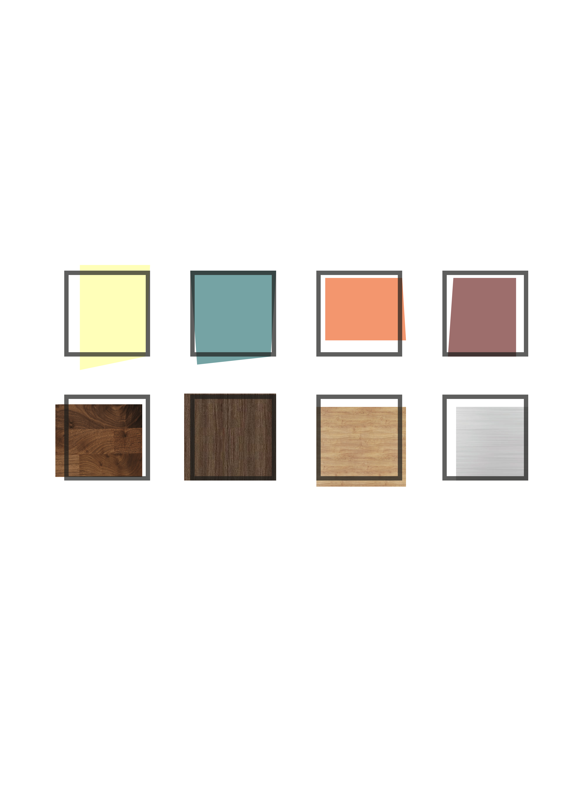

SOMETHING GOOD


La suite ‘Something Good’ prende spunto dallo stile colorato orientale etnico, perfetto per un’atmosfera di pace e tranquillità. La palette di colori è varia ma l’accostamento di questi ultimi, tra loro e con i materiali diversi, rende l’ambiente felice e spensierato. Ciò non toglie spazio all’aspetto rilassante dato dalla bassa opacità dei colori. Materiale predominante è il caldo legno.
